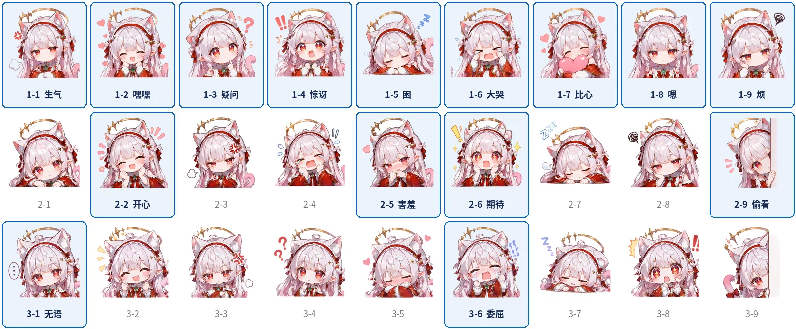
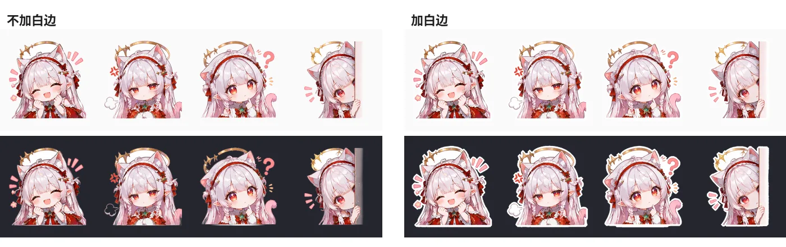
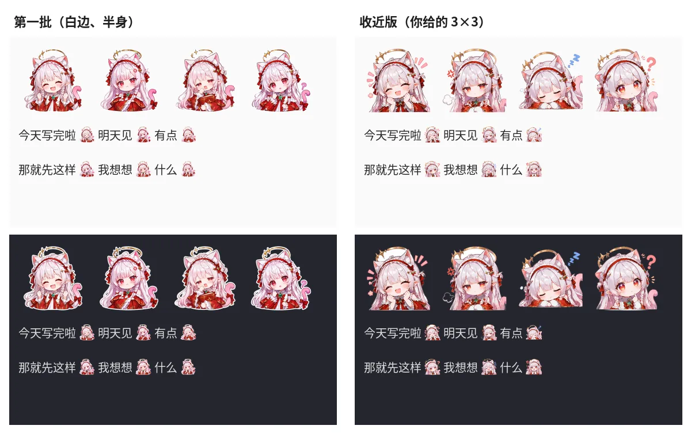

第 2 轮：星璃默认表情包
你给的三张 3×3 切成 27 格，用 rembg 的 isnet-anime 抠人物，再把“明显不是白底”的颜色并进来，问号、感叹号、Zzz、气团这些符号都留住了；邻格切进来的碎块去掉了。每张 512×512 透明底 WebP。
收近版挑这 15 张、用这些名字行不行？
推荐：蓝框的 15 张，一种表情一张，挑符号最清楚的那一格；名字就是写法里的名字（:lyra/开心:）。没挑的 12 张大多是同一表情的另一版（三张里各有一版开心、生气、睡觉、哭、偷看），留在本地不进包。要换哪一格、改哪个名字，写在附言里，例如“2-7 换掉 1-5”“嗯 改叫 认真”。

收近版也加一圈白边吗？
推荐加：你给的图本来没有白边，我按外形补了一圈（同第一批的模切边）。暗色底上加了白边的更像贴纸，头发和底色也分得开；亮色底上看不太出差别。

加白边
不加
第一批（半身、12 张）怎么用？
推荐 A：两个内置包。下图左边是第一批，右边是收近版；上面一行是单发时的大图（约 120 像素），下面两行是句子里的行内小图。大图两版都好看，第一批的衣服、尾巴更完整；行内小图第一批几乎分不出，收近版靠符号认得出来。所以收近版做主包 lyra（星璃），第一批做第二个包 lyra-chibi（星璃 · 半身）；内置主创 Profile 默认只列主包，第二个包在 Profile 设置里自己勾。

A 两个内置包
两版都能用，名字可以重复（:lyra/开心: 与 :lyra-chibi/开心:）
B 只内置收近版
第一批留在本地，以后想用再导入
C 只内置第一批
行内小图认不出，要靠悬停提示
已定
- 构图收近；第一批也保留，比过大图再定怎么用（第 1 轮）
- 第一批图里的白边留着（第 1 轮）
- 收近版用你给的三张 3×3，不再重新生成（会话里）
- 内置来源：随应用分发、只读、可复制到我的，内置主创默认能用（第 1 轮）